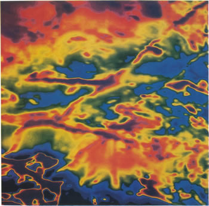

|
Here is a magnetic data set that is much too large to invert directly. Basic processing of this type of potential fields data can be very useful for characterizing geologic and structural trends. Click buttons for alternate images. (This map covers approximately 60km x 60km).
Raw
airborne total-field magnetic data |
 |